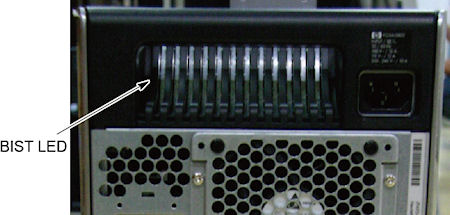

Operating Documentation
Direction 5181178-800, Rev# 16
BrightSpeed Select Service Methods Gen
Module Version 1.0, Version Date 3/23/10
Operating Documentation |
| Last Revised: | 09 December 2009 |
The follow information assists in confirming if the HP Z800 Host PC is experiencing a hardware fault. Although the following is not a complete set of diagnostics, it should be sufficient in determining if the Z800 is suffering from hardware issues at the prescribed Field Replaceable Unit (FRU) level.
Obtain complete diagnostic details for the HP Z800 PC from Hewlett Packard’s support web site: http://www.hp.com/sbso/busproducts-workstations.html
Search by PC model number and download the appropriate Technical Reference Guide.
| ||||
| ELECTROCUTION HAZARD | ||||
| there is power to the system board even when the Host PC is powered down. | ||||
| per PROPER LOCKOUT / TAGOUT PROCEDURES, Disconnect AC power from the Host PC before reseating or replacing components. |
Before proceeding with the rest of this procedure, use the following checklist to find possible solutions for Host PC problems:
Are the Host PC and Monitors connected to a working electrical outlet?
Is the Host PC powered on?
Is the front panel green power light illuminated?
Are the monitors powered on?
Are the blue monitor lights illuminated?
Adjust the monitor brightness and contrast controls if the monitor is dim.
Press and hold any key. If the Host PC beeps, then the keyboard is operating correctly.
Examine all cables for loose or incorrect connections.
Remove all diskettes and CDs from the drives before you power on the system.
Are you running the latest BIOS version and have correct BIOS Settings?
The Z800 has a special LED mounted just inside the PSU rear ventilation grill. When the Built In Self Test (BIST) LED is green, the PSU is operational. (See Illustration 1.)
Illustration 1: BIST PSU LED

Table 1: Z800 Power Supply Problems (BIST LED)
| Problem | Cause | Solution |
| Power supply shuts down intermittently. | Power supply fault | Replace Host PC. |
| Workstation powered off automatically and the Power LED flashes red two times, once every second, followed by a two-second pause. | Processor thermal protection activated OR Fan(s) blocked or not turning OR CPU heatsink fan assembly not properly attached to the processor |
|
| Power LED flashes red, once every two seconds. | Power failure (power supply overloaded) |
|
Observe these conditions over time. If this situation repeats regularly, the Host PC’s PSU or hardware is faulty. Replace the Host PC FRU. If these conditions happen rarely, look for Power and AC connection issues.
The Power LED above the Power On/Off button has the following states:
| Color | Host PC State |
| None | Off OR Hibernate(not used) |
| Solid Blue | On |
| Flashing Blue (once per second) | Standby (not used) |
| Solid or Flashing Red | Error |
Table 2: Z800 Front Panel Power LED and Beep Code
| Power LED and Sound Activity | Diagnosis and Service Action |
| None | Power supply failure
|
| Blinks red 2 times, once per second, then 2 second pause, 2 beeps | Thermal shutdown
|
| Blinks red 3 times, once per second, then 2-second pause, 3 beeps | CPU not installed
|
| Blinks red 4 times, once per second, then 2 second pause, 4 beeps | Power supply failure
|
| Blinks red 5 times, once per second, then 2 second pause, 5 beeps | Pre-video memory error
|
| Blinks red 6 times, once per second, then 2 second pause, 6 beeps | Pre-video graphics card error. For systems with graphics cards, do the following:
|
| Blinks red 7 times, once per second, then 2 second pause, 7 beeps. | System board failure (ROM detected failure before video).
|
| Blinks red 8 times, once per second, then 2 second pause, 8 beeps | Invalid ROM based on bad checksum
|
| Blinks red 9 times, once per second, then 2 second pause, 9 beeps | System power is on but unable to boot. Replace the Host PC. |
The Disk Activity LED below the Power On/Off button flickers whenever the system is accessing either hard drive.
The network activity LEDs at the rear of the Host PC chassis (including both the onboard network port and the two Dual Port GBe card ports) flicker whenever there is network activity on that port. These LEDs remain a solid light as long as the system is plugged into AC power with the power switch on and connected to other live Ethernet ports.
POST is a program run at startup that initializes and runs various tests on installed hardware. An audible and/or visual message occurs if the POST encounters a problem.
All errors are reported on the POST screen at the end of POST, before booting the OS. If there are any Fatal or Uncorrectable Non-Fatal errors reported, you are presented with an F1 Boot prompt. This ensures that the system doesn't boot before you are able to see the errors.
| NOTE: | The errors displayed are from the previous boot. They occurred before the most recent reboot, or they caused the most recent reboot. |
POST checks the following items to ensure that the workstation system is functioning properly:
Keyboard
Memory modules
Temperature Sensor
All mass storage devices
Processors
Fans
Controllers
Table 3: Z800 POST Error Messages
| Screen Message | Probable Cause | Recommended Action | |||
|---|---|---|---|---|---|
| 101-Option ROM Error | System ROM checksum |
| |||
| 102-System Board Failure | DMA, timers |
| |||
| 110-Out of Memory for Option ROMs. | Option ROM for a device was unable to run due to memory constraints. |
| |||
| 162-System Options Not Set | Your system configuration has changed since your last boot, in which case press <F1>. Or, a loss of power to the Real Time clock (RTC) has occurred. |
| |||
| 163-Time and Date Not Set | Invalid time or date in configuration memory. RTC battery might need to be replaced. CMOS jumper might be improperly installed. |
| |||
| 164-Memory Size Error | The system memory size is different or memory configuration changed from the last startup. |
| |||
| 201-Memory Error | The memory test performed during startup failed. |
| |||
| 202-Memory type mismatch | Memory modules do not match each other. | Replace memory modules with matched sets. | |||
| 203-Memory module failed | Defective memory module | Replace DIMMs. | |||
| 204-Memory module failed | Improper module load | Reseat DIMMs. | |||
| 205-Memory high temperature detected | Insufficient memory module cooling | Verify memory cooling fan. | |||
| 206-Memory set up invalid | DIMMs does not match to system requirement. |
| |||
| 207-Incompatible memory modules detected. | Incompatible memory module(s) detected. |
| |||
| 209-Memory warning condition | Incompatible memory modules detected. |
| |||
| 212-Failed Processor | Processor failed to initialize. |
| |||
| 213-Incompatible ECC Memory Module in memory Socket(s). | The memory modules in the system are either not all ECC, or not all non-ECC. Another cause is the DIMM is missing critical SPD information. |
| |||
| 214-DIMM Configuration Warning | DIMMs not installed correctly (not paired correctly). | Refer to the Theory section for the correct memory configurations and reseat the DIMMs accordingly. | |||
| 301-Keyboard Error. | Keyboard failure. |
| |||
| 303-Keyboard Controller Error | I/O board keyboard controller. |
| |||
| 304-Keyboard or System Unit Error | Keyboard failure. |
| |||
| 510-Splash Screen image corrupted | Splash Screen image has errors |
| |||
| 511-CPU Fan not detected | Fan is not connected or may have malfunctioned. |
| |||
| 512-Chassis fan not detected | Fan is not connected or may have malfunctioned. |
| |||
| 513-Memory fan not detected | Memory fan is not connected or may have malfunctioned. |
| |||
| 514-Memory fan not detected | Memory fan is not connected or may have malfunctioned. |
| |||
| 515-CPU Overtemp ocurred | Insufficient processor cooling or processor defect. | Replace the processor. | |||
| 516-Chipset fan not detected | Chipset fan is not connected or may have malfunctioned. |
| |||
| 517-Low power CPU heatsink(s) detected for high power CPUs | Heatsink is not installed correctly. | Replace the Host PC. | |||
| 518-Power supply wattage insufficient for hardware configuration | Workstation requires more power than the power supply can provide. | Replace the power supply. | |||
| 601-Diskette Controller Error | Diskette controller circuitry or diskette drive circuitry incorrect. |
| |||
| 605-Diskette Drive Type Error | Mismatch in drive type. |
| |||
| 610-External Storage Device Failure | External drive not connected. |
| |||
| 611-Primary Diskette Port | Address assignment conflict |
| |||
| 912-Computer Cover Has Been Removed Since Last System Start Up | N/A | No action required. | |||
| 916-Power Button Not Connected | Power button not connected. | Connect the power button. | |||
| 917-Front Audio Not Connected | Front audio cable not connected. | Connect the front audio cable. | |||
| 918-Front USB Not Connected | Front USB not connected. | Connect the front USB cable. | |||
| 921-Device in PCI Express Slot Failed to Initialize | PCI Express card detected in one of the slots, but failed to initialize properly. | Reseat all PCI Express cards.
| |||
| 922-Fatal error on slot # | Fatal error occurred in the designated slot. |
| |||
| 923-Non fatal error on slot # | PCI or PCIe non-fatal error condition occurred for the device in the designated slot. |
| |||
| 1720 SMART Hard Drive Detect Imminent Failure | Hard drive is about to fail. |
| |||
| 1783-Disk 0/1 Failure. | Drive not installed correctly or has failed. |
| |||
| 1801-Microcode Update Error | Missing or Invalid Processor Microcode Update |
| |||
| 1802-Processor Not Supported | System board does not support the processor. | Replace the processor with a compatible one. | |||
| Invalid Electronic Serial Number | Electronic serial number has become corrupted. |
| |||
| Network Server Mode Active and No Keyboard Attached | Keyboard not detected. | Verify that a keyboard is attached. |